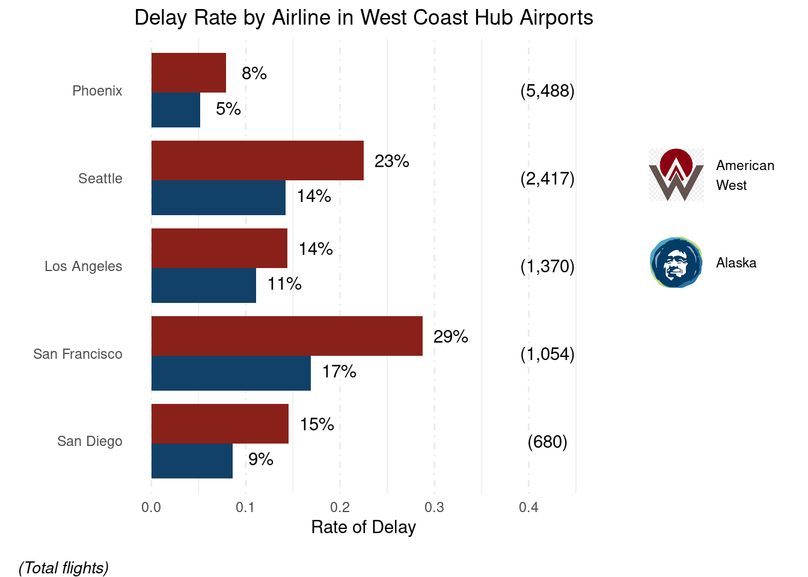

Hi - I'm Alyssa Gurkas
A data science professional with five years of public sector experience...
Download ResumeProjects
Sentiment Analysis of Tweets
A quick exercise to assess the sentiment of tweets...
Tools: R, Hugging Face Models, tidyverse, etc.
View PostTime Series Animated Plot
This post walks through how to create an animated graph using NBA stats.
Tools: R, tidyverse, gifski, gganimate
 View Post
View Post
Tidying and Transforming Data
This exercise shows how to tidy and transform messy data...
Tools: R, prophet, forecast, ggplot2
 View Post